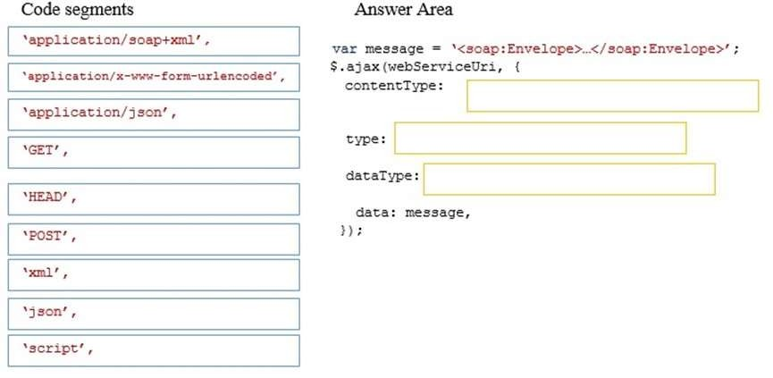
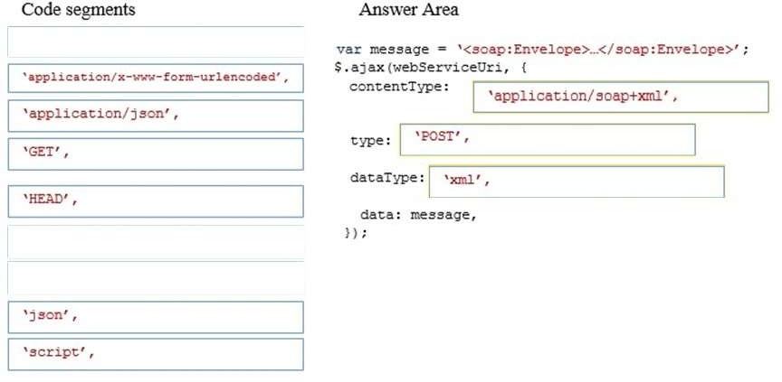

|
DRAG DROP
You develop an HTML application that calls a Simple Object Access Protocol (SOAP) web
service to retrieve data.
You need to load data from the web service.
What should you do? To answer, drag the appropriate code segments to the correct targets.
Each code segment may be used once, more than once, or not at all.
You may need to drag the split bar between panes or scroll to view content.
NOTE: Each correct selection is worth one point.
Select and Place:

Correct Answer:

Section: Volume C
Explanation
Explanation/Reference:
Explanation:
* contentType - contentType is the type of data you're sending.
We have to send the content-type of application/soap+xml as this is the only type
that the web service allow.
* type - We post a SOAP request.
* dataType: dataType is what you're expecting back from the server: json, html, text, xml, etc. jQuery will use
this to figure out how to populate the success function's parameter.
Explicación
Este ejercicio tiene relación con el método $.ajax():
jQuery proporciona este método para realizar peticiones Ajax al servidor,
la diferencia es que este método se puede utilizar para peticiones get o post,
y para elegir entre muchas opciones diferentes que vamos a explicar a continuación.
Digamos tenemos el siguiente objeto:
var configuracion = {
nombre: "Triángulo",
tamañoLado: 20,
color: "azul"
};
El método $.ajax() cuenta con dos sintaxis posibles:
$.ajax(url, { objeto-configurable } );
// o
$.ajax( { objeto-configurable } );
En la primera sintaxis, se especifica la url a la que enviar la petición Ajax,
y luego se pasa el objeto configurable, y en la segunda, se pasa directamente el objeto,
que también contendrá la dirección url de la petición.
El objeto configurable contendrá uno o varios de los parámetros siguientes:
-
type : tipo de la petición, GET o POST (GET por defecto).
-
url : dirección a la que se envía la petición.
-
data : datos a enviar al servidor.
-
dataType : tipo de datos que esperas obtener del servidor (si no se especifica, jQuery intenta averiguar de qué tipo se trata).
-
success : función que se ejecuta cuando se obtiene una respuesta con éxito.
-
error : función que se llama si la petición no tiene éxito.
Según nuestro ejercicio tenemos que rellenar tres campos:
- ContentType
- type
- dataType
Respuesta:
-
ContentType: Según las condiciones del ejercicio tenemos una aplicación
que llama a un servicio SOAP para obtener datos. El tipo del contenido por
lógica tienen que ser "application/soap+xml"
-
type: con lo descrito anteriormente esto debe ser get o post. Como enviamos uan petición al servidor el método
más seguro es el POST. Además si no definimos este parámetro el método por defecto es GET.
- dataType: como se van a enviar datos SOAP, por definición SOAP (originalmente las siglas de Simple Object Access Protocol) es un
protocolo estándar que define cómo dos objetos en diferentes procesos pueden comunicarse por medio de intercambio de datos XML.
Es decir los datos son XML.
Fuentes:
https://openclassrooms.com/en/courses/4309491-simplifica-tus-proyectos-con-jquery/4981961-el-metodo-ajax
https://es.wikipedia.org/wiki/Simple_Object_Access_Protocol
|